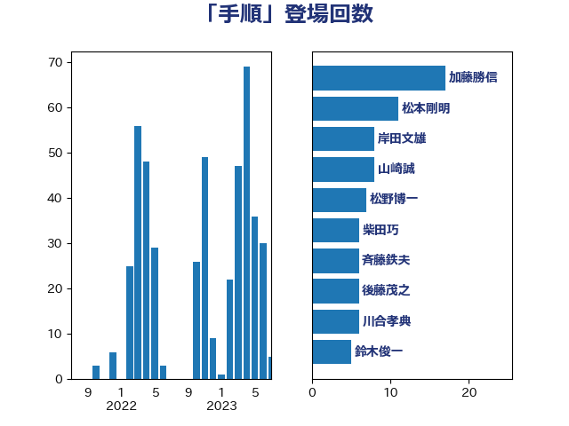

単語「手順」

| 加藤勝信 | 自由民主党 | 17 回 |
| 松本剛明 | 自由民主党 | 11 回 |
| 岸田文雄 | 自由民主党 | 8 回 |
| 山崎誠 | 立憲民主党 | 8 回 |
| 松野博一 | 自由民主党 | 7 回 |
| 柴田巧 | 日本維新の会 | 6 回 |
| 斉藤鉄夫 | 公明党 | 6 回 |
| 後藤茂之 | 自由民主党 | 6 回 |
| 川合孝典 | 国民民主党 | 6 回 |
| 鈴木俊一 | 自由民主党 | 5 回 |
| 谷公一 | 自由民主党 | 5 回 |
| 牧義夫 | 立憲民主党 | 5 回 |
| 杉尾秀哉 | 立憲民主党 | 5 回 |
| 空本誠喜 | 日本維新の会 | 4 回 |
| 田中健 | 国民民主党 | 4 回 |
| 河野太郎 | 自由民主党 | 4 回 |
| 山下芳生 | 日本共産党 | 4 回 |
| 鈴木敦 | 国民民主党 | 3 回 |
| 輿水恵一 | 公明党 | 3 回 |
| 田村智子 | 日本共産党 | 3 回 |
| 浜田靖一 | 自由民主党 | 3 回 |
| 岡田直樹 | 自由民主党 | 3 回 |
| 伊藤岳 | 日本共産党 | 3 回 |
| 高市早苗 | 自由民主党 | 2 回 |
| 須藤元気 | 無所属 | 2 回 |
| 階猛 | 立憲民主党 | 2 回 |
| 野田国義 | 立憲民主党 | 2 回 |
| 野田佳彦 | 立憲民主党 | 2 回 |
| 西銘恒三郎 | 自由民主党 | 2 回 |
| 西田実仁 | 公明党 | 2 回 |
| 若宮健嗣 | 自由民主党 | 2 回 |
| 舟山康江 | 国民民主党 | 2 回 |
| 紙智子 | 日本共産党 | 2 回 |
| 米山隆一 | 立憲民主党 | 2 回 |
| 礒崎哲史 | 国民民主党 | 2 回 |
| 石田昌宏 | 自由民主党 | 2 回 |
| 猪瀬直樹 | 日本維新の会 | 2 回 |
| 熊谷裕人 | 立憲民主党 | 2 回 |
| 浜口誠 | 国民民主党 | 2 回 |
| 水野素子 | 立憲民主党 | 2 回 |
| 櫻井周 | 立憲民主党 | 2 回 |
| 森屋隆 | 立憲民主党 | 2 回 |
| 柴愼一 | 立憲民主党 | 2 回 |
| 柳ヶ瀬裕文 | 日本維新の会 | 2 回 |
| 本田顕子 | 自由民主党 | 2 回 |
| 新妻秀規 | 公明党 | 2 回 |
| 川田龍平 | 立憲民主党 | 2 回 |
| 大島敦 | 立憲民主党 | 2 回 |
| 北神圭朗 | 無所属 | 2 回 |
| 仁比聡平 | 日本共産党 | 2 回 |
| 中司宏 | 日本維新の会 | 2 回 |
| 鳩山二郎 | 自由民主党 | 1 回 |
| 高木陽介 | 公明党 | 1 回 |
| 高木かおり | 日本維新の会 | 1 回 |
| 青山繁晴 | 自由民主党 | 1 回 |
| 阿部知子 | 立憲民主党 | 1 回 |
| 阿達雅志 | 自由民主党 | 1 回 |
| 長浜博行 | 無所属 | 1 回 |
| 長坂康正 | 自由民主党 | 1 回 |
| 鎌田さゆり | 立憲民主党 | 1 回 |
| 金子恵美 | 立憲民主党 | 1 回 |
| 金子恭之 | 自由民主党 | 1 回 |
| 金城泰邦 | 公明党 | 1 回 |
| 野間健 | 立憲民主党 | 1 回 |
| 酒井庸行 | 自由民主党 | 1 回 |
| 進藤金日子 | 自由民主党 | 1 回 |
| 近藤昭一 | 立憲民主党 | 1 回 |
| 谷田川元 | 立憲民主党 | 1 回 |
| 西村康稔 | 自由民主党 | 1 回 |
| 芳賀道也 | 国民民主党 | 1 回 |
| 美延映夫 | 日本維新の会 | 1 回 |
| 緒方林太郎 | 無所属 | 1 回 |
| 笠井亮 | 日本共産党 | 1 回 |
| 福田昭夫 | 立憲民主党 | 1 回 |
| 石橋通宏 | 立憲民主党 | 1 回 |
| 石井苗子 | 日本維新の会 | 1 回 |
| 石井章 | 日本維新の会 | 1 回 |
| 田畑裕明 | 自由民主党 | 1 回 |
| 田嶋要 | 立憲民主党 | 1 回 |
| 田名部匡代 | 立憲民主党 | 1 回 |
| 田中英之 | 自由民主党 | 1 回 |
| 猪口邦子 | 自由民主党 | 1 回 |
| 牧島かれん | 自由民主党 | 1 回 |
| 牧山ひろえ | 立憲民主党 | 1 回 |
| 源馬謙太郎 | 立憲民主党 | 1 回 |
| 湯原俊二 | 立憲民主党 | 1 回 |
| 渡辺周 | 立憲民主党 | 1 回 |
| 池畑浩太朗 | 日本維新の会 | 1 回 |
| 永岡桂子 | 自由民主党 | 1 回 |
| 森本真治 | 立憲民主党 | 1 回 |
| 梅村聡 | 日本維新の会 | 1 回 |
| 枝野幸男 | 立憲民主党 | 1 回 |
| 末松信介 | 自由民主党 | 1 回 |
| 早稲田ゆき | 立憲民主党 | 1 回 |
| 日下正喜 | 公明党 | 1 回 |
| 新垣邦男 | 立憲民主党 | 1 回 |
| 斎藤アレックス | 国民民主党 | 1 回 |
| 掘井健智 | 日本維新の会 | 1 回 |
| 平口洋 | 自由民主党 | 1 回 |
| 山岸一生 | 立憲民主党 | 1 回 |
| 山口壯 | 自由民主党 | 1 回 |
| 山下雄平 | 自由民主党 | 1 回 |
| 小沢雅仁 | 立憲民主党 | 1 回 |
| 小倉將信 | 自由民主党 | 1 回 |
| 寺田稔 | 自由民主党 | 1 回 |
| 宮本岳志 | 日本共産党 | 1 回 |
| 宮下一郎 | 自由民主党 | 1 回 |
| 太田房江 | 自由民主党 | 1 回 |
| 吉良よし子 | 日本共産党 | 1 回 |
| 吉田久美子 | 公明党 | 1 回 |
| 吉田はるみ | 立憲民主党 | 1 回 |
| 吉田とも代 | 日本維新の会 | 1 回 |
| 吉川沙織 | 立憲民主党 | 1 回 |
| 吉川元 | 立憲民主党 | 1 回 |
| 吉川ゆうみ | 自由民主党 | 1 回 |
| 古川禎久 | 自由民主党 | 1 回 |
| 北村経夫 | 自由民主党 | 1 回 |
| 佐藤英道 | 公明党 | 1 回 |
| 佐藤公治 | 立憲民主党 | 1 回 |
| 住吉寛紀 | 日本維新の会 | 1 回 |
| 伊藤渉 | 公明党 | 1 回 |
| 伊東信久 | 日本維新の会 | 1 回 |
| 伊佐進一 | 公明党 | 1 回 |
| 井野俊郎 | 自由民主党 | 1 回 |
| 井坂信彦 | 立憲民主党 | 1 回 |
| 中谷真一 | 自由民主党 | 1 回 |
| 中川正春 | 立憲民主党 | 1 回 |
| 上月良祐 | 自由民主党 | 1 回 |
| 三浦信祐 | 公明党 | 1 回 |
| 三上えり | 立憲民主党 | 1 回 |
| 一谷勇一郎 | 日本維新の会 | 1 回 |